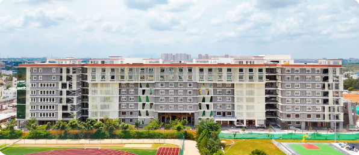

Organized by Kristu Jayanti Institute of Technology, Kristu Jayanti (Deemed to be University), in collaboration with Skyline University Nigeria
International Conference on Current Trends in Advanced Computing

About ICCTAC
Where Technology Meets Expectation.
The International Conference on Current Trends in Advanced Computing (ICCTAC) provides an excellent forum for sharing knowledge and results in theory, methodology, and applications of recent trends in Information Technology. The aim of the conference is to provide a platform for researchers and practitioners from both academia and industry to meet and share cutting-edge developments in the field of Computer Science.
Authors are solicited to contribute by submitting articles that illustrate research results, projects, surveying works, and industrial experiences describing significant advances in areas including, but not limited to, Data Science, Machine Learning, Human-Computer Interaction, Artificial Intelligence, Mobile Computing, Parallel Computing, Cloud Computing, Data Mining, Text Mining, Web Mining, Image Processing, Big Data Analytics, Internet of Things, Embedded Systems, Bio-Inspired Computing, Networks, Data Security, and Software Engineering.
Publication
All selected papers will be considered for publication as Scopus-indexed book chapters or in Scopus-indexed Q3/Q4 journals, subject to the quality and novelty of the research work. The final publication and indexing status will depend on the novelty, originality, quality, and scope of the submitted paper. Presented and selected papers have previously been published in Scopus, Springer, and Wiley.
Host institution
Kristu Jayanti Institute of Technology
Kristu Jayanti (Deemed to be University), established in 1999, is managed by St. Joseph Province Kottayam, Kerala, of the Carmelites of Mary Immaculate (CMI). It gained autonomous status in 2013 and was conferred Deemed to be University status in July 2025 under Section 3 of the UGC Act, 1956. It holds the highest NAAC grade of A++ (2021) and was ranked 34th in NIRF 2025, placing it among India's top 100 institutions. Its School of Management programmes are internationally accredited by ACBSP, USA, and the institution received DBT Star College status in 2020.
The Institute offers postgraduate programmes in MCA, M.Sc. Cyber Security, M.Sc. Computer Science, and M.Sc. Data Science — two-year, full-time programmes spanning four semesters, covering Advanced Database Management Systems, Operating Systems, Computer Networks, Software Engineering, Artificial Intelligence, Software Testing, Web Technologies, and Data Mining, in an integrated academic and industry-oriented environment.
Visit University WebsiteImportant Links
- RegistrationICCTAC 2027 RegistrationRegister
- Call for PapersSubmission GuidelinesRead guidelines
- Paper SubmissionHow to SubmitView steps
- DownloadsICCTAC 2027 BrochureDownload PDF
- LocationVenue DetailsView venue
Call for Papers
Original, unpublished research is invited across the areas listed below, but not limited to them. Full papers are accepted in 4 to 6 pages, Journal format. Read the submission guidelines or see how to submit.
Tracks
- Data Science
- Machine Learning
- Human-Computer Interaction
- Artificial Intelligence
- Mobile Computing
- Parallel Computing
- Cloud Computing
- Data Mining
- Text Mining
- Web Mining
- Image Processing
- Big Data Analytics
- Internet of Things
- Embedded Systems
- Bio-Inspired Computing
- Networks
- Data Security
- Software Engineering
Technical Sessions
Detailed schedule and keynote information to be updated soon. Check back closer to the conference, or contact the organizers at icctac@kristujayanti.com.
Committee
Faculty Team
Venue
Kristu Jayanti Institute of Technology
Airport Road Campus, Chagalatti, Yelahanka Taluk, Bengaluru – 562149, Karnataka, India.
View on Google MapsRegistration
Registration Fees (per accepted paper)
| Category | National (India) | International |
|---|---|---|
| Academia & Industry | ₹1,500 | $250 |
| Research Scholars | ₹1,500 | $200 |
4 to 6 pages, Journal format · Maximum 5–6 participants per paper · Submit your completed registration via the official portal.